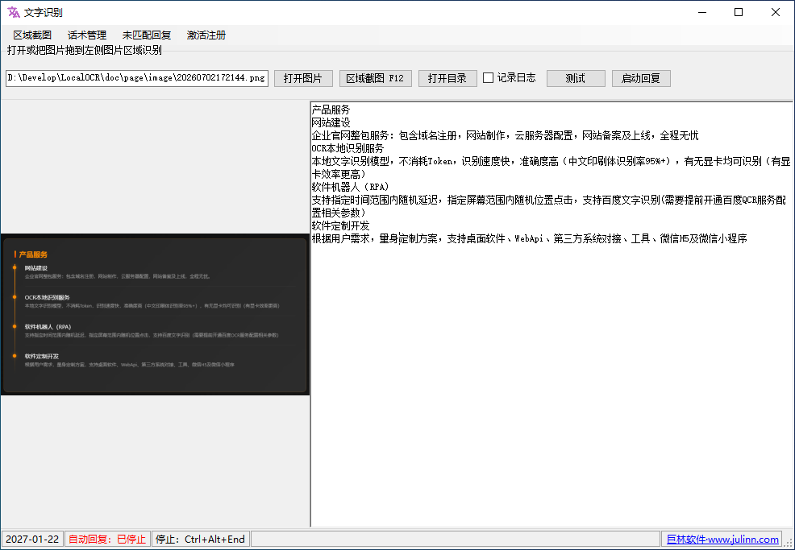
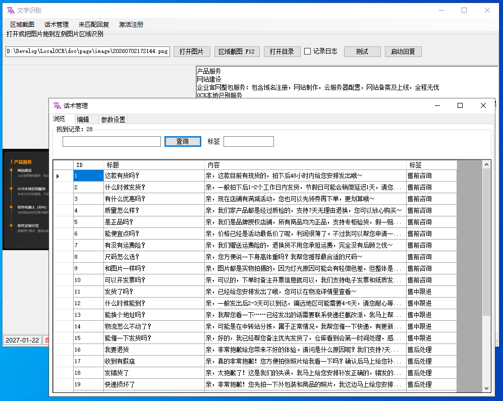
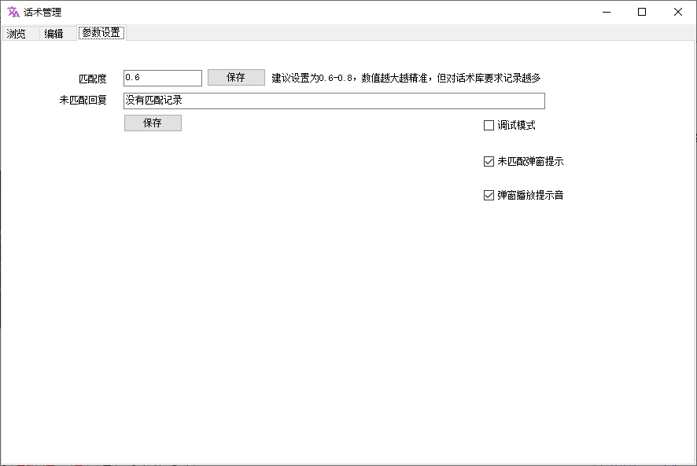
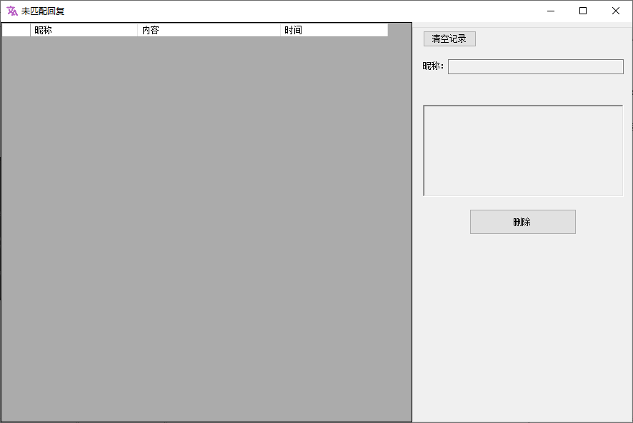

搭载本地文字识别模型，无需调用第三方API，不消耗任何Token资源，大幅降低运营成本，识别过程全程本地化，客户对话数据本地留存更安全。
中文印刷体识别率高达95%以上，毫秒级快速识别；有无显卡均可稳定运行，配备独立显卡时识别速度大幅提升，低配电脑也能流畅使用。
专为微信微商电商场景深度开发，自定义电商话术库，全天候智能匹配客户咨询自动回复，不用人工守岗，不错过任何潜在成交客户。
无法匹配话术的客户消息自动存档保存，弹窗+提示音双重预警提醒人工跟进，完整记录客户昵称、消息内容与咨询时间，方便后期优化话术、跟进客户。

主识别界面 - 区域截图/图片导入OCR识别

话术管理界面 - 批量管理售前/售中/售后话术库

参数设置界面 - 自定义匹配度、提醒开关

未匹配回复界面 - 自动存储未匹配话术咨询
注意：先测试再付费，以免系统不兼容无法正常使用